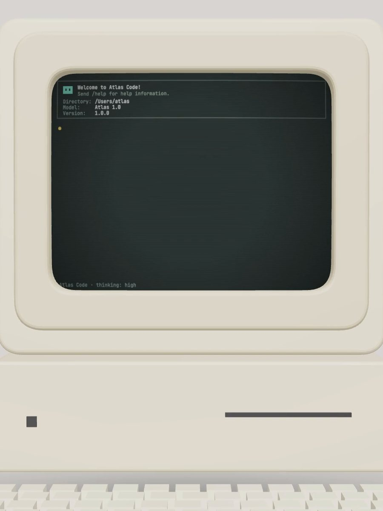
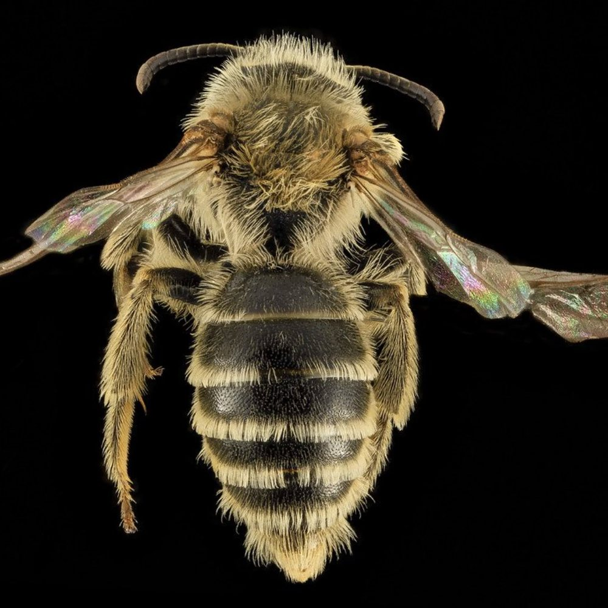
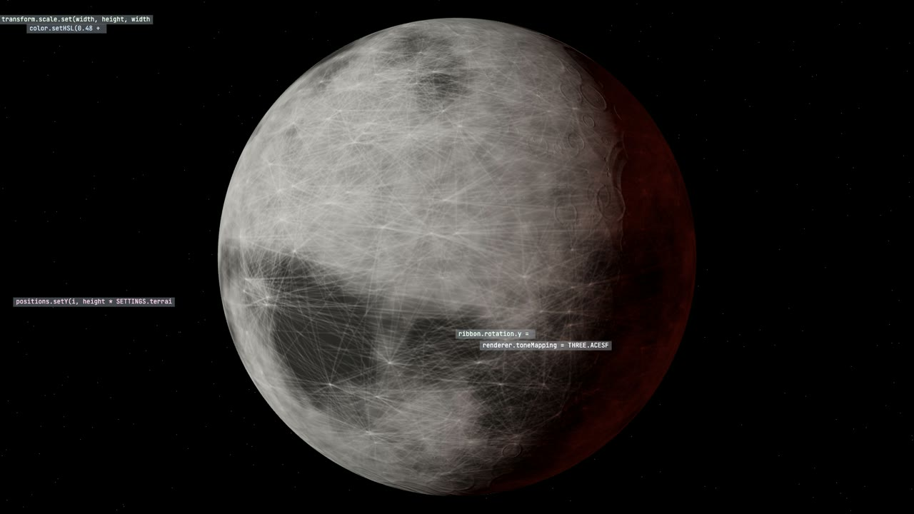
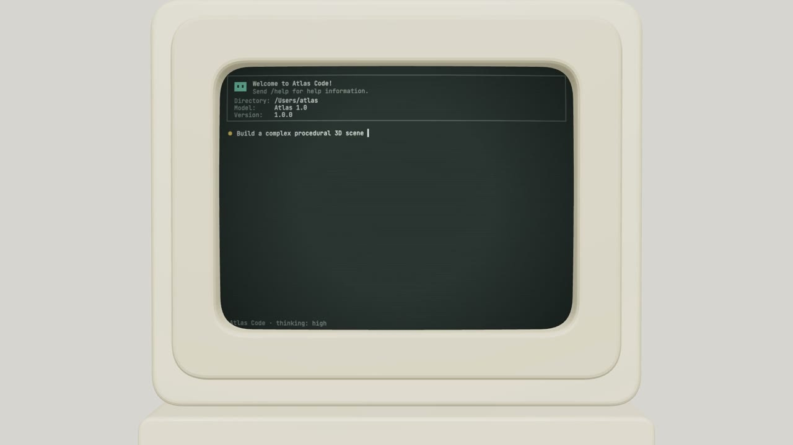
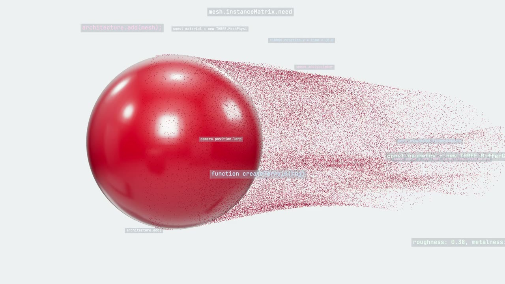
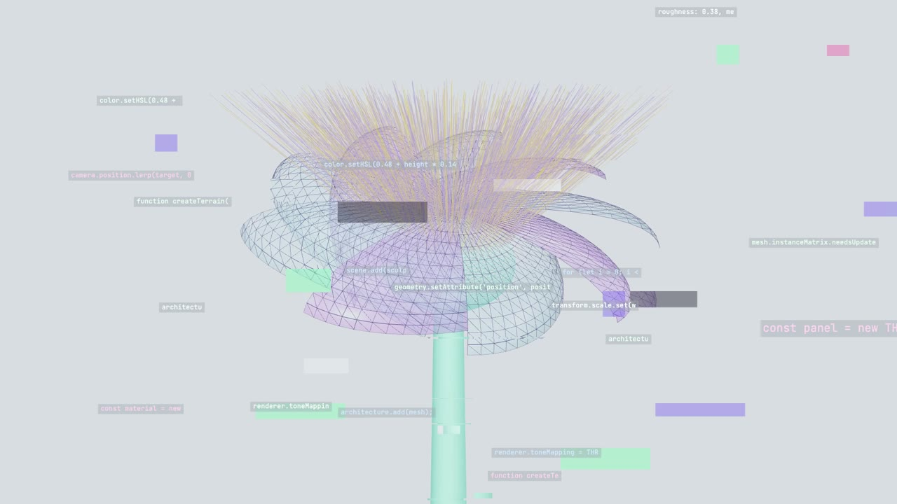
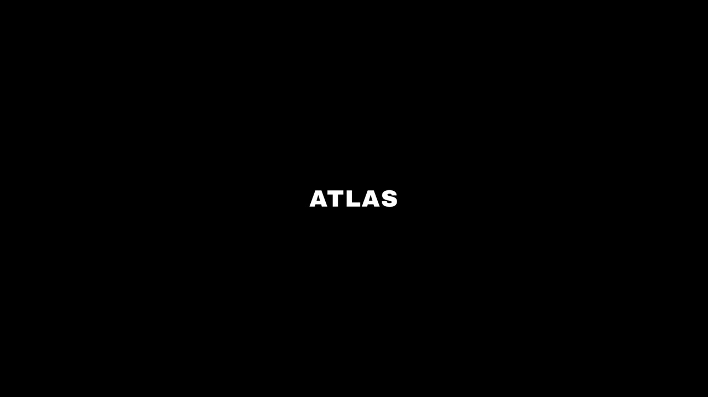
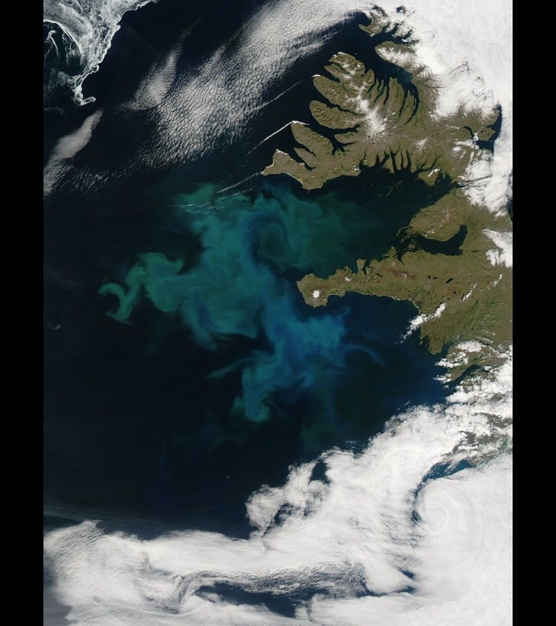

Show everything in 24 seconds
An open-source agent skill that cuts your launch teaser from 989 real objects, on a rhythm measured frame by frame.
Origin, 67 frames
The flash montage is the launch teaser everyone copied in October 2026: a product moment, then three bursts of unrelated, beautifully lit objects cut at one and two frames, slowing until one object holds and dissolves into code.
Who it's for. Teams launching a model, an agent or a developer tool who want the “it can make anything” teaser without a week in an editor. You bring a name, a prompt and a few lines of your real code; the formula decides the rest.
What it makes. A HyperFrames project, not a flat video: an origin scene, one scene per burst with every shot as a timed clip you can move, three live 3D holds, a glitch layer, sound cues, a shot list and a credits file. It renders to a 1080p MP4 in minutes.
Where it runs. In any agent that loads skills: Claude Code, Cursor, Codex and the rest that npx skills installs into. It runs on your machine with Python, Node and ffmpeg and needs no API keys.
How to get it. One command installs the skill, a second fetches the image library. Then ask your agent for a flash montage of your product. The code is MIT-licensed; every image is CC0, public domain, NASA media or generated.
Three acts, measured

The first 67 frames show the product working: a beige terminal types your prompt while the camera pushes in, then the screen tears into blocks. Two seconds, no logo.

Then three bursts of 48, 35 and 71 shots. Each starts at one or two frames a shot and slows to six or eleven. No subject appears twice in a row, and the grounds alternate pale, black and full-bleed.

Each burst lands on a hold: a sphere shedding particles, an x-ray flower, the moon. Your own code gathers on it as translucent chips, then the frame breaks apart. The film ends on a small wordmark and one high ping.
48 shots · 133 frames · 4.4 s
Draw a burst
Every shot length comes from one curve, d(i) = a + (b − a)·(i / (n − 1))p, rounded on the running total so that 1.5 frames comes out as two, one, two, one.
Burst A opens. Forty-eight shots, two frames easing to six.
Burst B restarts fast. Thirty-five shots, then the flower holds.
Burst C slows down. Seventy-one shots, from one frame to eleven.
Now yours. Name it, drag the curve, press play.
A real render
Watch it with soundATLAS is a made-up brand. One command built it from the default plan; every image in it is CC0 or public domain, and its credits file lists all 158 sources.




What you skip
989 open images
Shells, skeletons, eyes, plates, minerals, creatures, machines, drawings, aerials, the cosmos and studio objects, curated by eye for single subjects on plain studio grounds. Each one carries its licence, creator, source page, ground and palette, and you can use every one in a commercial film.
Thirteen categories, 827 photographs and scans plus 162 stills of the skill's own 3D specimens. The library has its own repository and its own site.
Browse the libraryflash-montage takes its rhythm from the Kimi K3.1 teaser of October 2026, which put 159 shots into 24 seconds. The idea is much older. In 1959 Charles and Ray Eames filled seven screens in Moscow with more than 2,200 images in twelve minutes and called it Glimpses of the U.S.A. Godfrey Reggio's Koyaanisqatsi turned time-lapse and montage into a way of seeing a whole planet, and advertising borrowed its look for forty years. On TikTok, corecore cut found clips into pure feeling. The 2026 version keeps the breadth and drops the people: one object, centred on a plain studio sweep, lit like a museum specimen, gone in two frames. This skill writes that version down as numbers, so that any team can make one honestly, with images anyone may use. Read the full teardown.

Make yours tonight
Install the skill, fetch the library once, then ask your agent for a flash montage of your product. Free, MIT-licensed, no keys.
npx skills add arjunkshah12345-hash/flash-montage